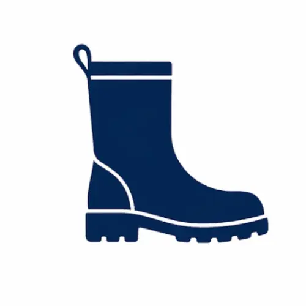
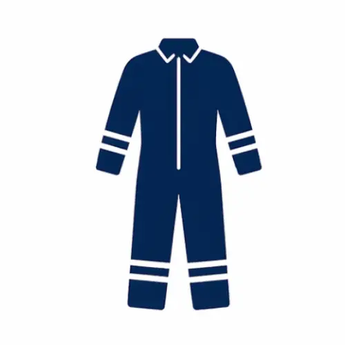

Agricultura Familiar Sustentável e Segura
Guia prático para produção responsável, proteção da saúde e conservação ambiental — foco em pequenos produtores
Princípio Central
Produtividade, saúde e preservação ambiental são pilares interdependentes. Produzir bem significa colher qualidade, garantir segurança alimentar e cuidar da saúde do produtor, da família e dos trabalhadores — preservando solo, água e biodiversidade para as futuras gerações.
IMPORTANTE!
Este guia é um recurso educativo baseado em instituições públicas brasileiras. Ele não substitui a assistência técnica personalizada. Sempre consulte um profissional habilitado (Emater, engenheiro agrônomo) para recomendações específicas à sua propriedade.
Não há responsabilidade por danos causados por aplicação inadequada das informações aqui contidas. Práticas inadequadas podem levar à degradação ambiental, contaminação alimentar e riscos à saúde humana e animal.
Entenda seu Ambiente Produtivo
Antes de qualquer intervenção, observe e diagnostique seu terreno. Esta etapa é a fundação de um manejo racional e sustentável.
Analise o Solo
Textura (arenoso/argiloso), cor (matéria orgânica), compactação. A Embrapa recomenda análise laboratorial para uso eficiente de fertilizantes.
Observe Clima e Relevo
Pluviosidade define calendário agrícola. Encostas exigem curvas de nível para evitar erosão. Áreas planas podem encharcar.
Monitore Água e Vegetação
Proteja nascentes e rios. Vegetação nativa indica qualidade do solo e abriga inimigos naturais de pragas.
Diferencie os Problemas das Plantas
Um diagnóstico correto evita intervenções desnecessárias:
- Problema Nutricional: Sintomas generalizados (amarelecimento = falta de N; bordas queimadas = falta de K)
- Praga: Sinais localizados (folhas mastigadas, insetos visíveis, carunchos)
- Doença: Manchas características, murchamento, apodrecimento (fungos, bactérias, vírus)
- Estresse Ambiental: Danos massivos correlacionados com eventos climáticos (geada, seca, vento)
Manejo Correto da Adubação
Aplicar a quantidade certa, na hora certa, no local certo. Excesso de fertilizantes contamina água, saliniza o solo e aumenta custos sem benefício.
| Tipo de Adubo | Vantagens | Cuidados Essenciais |
|---|---|---|
| Esterco Curtido | Melhora estrutura do solo Retém água e nutrientes | Usar apenas curtido Evitar esterco fresco |
| Composto Caseiro | Enriquece com micro-organismos Controla doenças de solo | Manter úmido e aerado Virar regularmente |
| Biofertilizantes | Fixam nutrientes do ar Solubilizam nutrientes do solo | Aplicar no plantio Proteger do sol forte |
| Adubação Verde | Cobertura do solo Fixação de nitrogênio | Usar EPIs na cortagem Escolher espécies adaptadas |
Uso Responsável de Defensivos Agrícolas
Defensivos são ferramentas poderosas, mas exigem responsabilidade. Siga rigorosamente a legislação do MAPA e Anvisa.
- Aplique somente quando necessário: Monitore antes; nem toda praga justifica intervenção
- Siga o receituário agronômico: Documento emitido por técnico habilitado com dose, cultura, intervalo de segurança
- Leia a bula e o rótulo: Fonte oficial de informações sobre toxicidade, dose, cultura permitida
- Nunca aumente a dose por conta própria: Aumenta risco de intoxicação e contaminação ambiental
- Nunca misture produtos sem orientação: Pode causar reações perigosas ou perda de eficácia
- Evite aplicar próximo a rios, nascentes, casas: A deriva contamina água e afeta saúde humana e animal
- Horário: Manhã cedo ou final da tarde (evitar 10h-16h)
- Vento: Ausência ou vento fraco (< 15 km/h) para evitar deriva
- Temperatura: Entre 18°C e 28°C
- Umidade: Acima de 60% reduz volatilização
- Chuva: Sem previsão nas próximas 24 horas
- Intervalo de Segurança (IS): Tempo mínimo entre última aplicação e colheita
- Período de Reentrada (PR): Tempo para retorno seguro à área tratada
Equipamentos de Proteção Individual (EPI)
EPIs são a última linha de defesa contra exposição a substâncias químicas. A NR-31 exige fornecimento e uso adequado.
Luvas
Nitrila, neoprene ou vinil, resistentes ao produto. Use luvas internas de algodão para absorver suor.
Verifique rasgos • Lave após uso
Botas
Borracha de cano alto, sola antiderrapante. Protegem pés e pernas de respingos concentrados.
Resistentes • Antiderrapante
Avental/Macacão
Material resistente a químicos. Macacão oferece proteção superior ao avental.
Químico-resistente • Ajuste confortávelÓculos de Segurança
Protegem olhos de respingos. Devem ser antifog e com proteção lateral.
Antifog • Proteção lateralMáscara Respiratória
Filtro PFF2 para pulverização manual; filtros químicos para maior risco.
Filtro adequado • Ajuste facialChapéu Árabe
Protege couro cabeludo, pescoço e orelhas. Material não poroso e fácil de limpar.
Não poroso • Fácil limpezaProteção Ambiental e Conservação
A proteção ambiental é obrigação legal e estratégica. Práticas que degradam solo, água e biodiversidade comprometem a própria produção a longo prazo.
Matas ciliares: Vegetação nativa às margens de rios filtra sedimentos e agroquímicos, mantém temperatura da água e abriga biodiversidade.
Legislação: Consulte órgão estadual para larguras mínimas de preservação conforme curso d'água.
Proibido: Aplicar defensivos próximos a nascentes, rios ou poços artesianos.
Embalagens de agrotóxicos: Tríplice lavagem → esmagar → entregar em ponto de coleta ou retornar ao revendedor.
Nunca: Reutilizar embalagens para alimentos/bebidas; descartar no lixo comum; queimar.
Resíduos orgânicos: Compostagem transforma restos em adubo de alto valor.
Abelhas: Evite aplicar defensivos em floração; prefira produtos com baixa toxicidade para polinizadores.
Inimigos naturais: Joaninhas, aranhas, sapos e aves controlam pragas naturalmente. Preserve vegetação nativa para abrigá-los.
Barreiras vivas: Plantar vegetação ao redor da propriedade reduz deriva de defensivos.
Curvas de nível: Plantar seguindo linhas de mesma altitude retém água e solo em encostas.
Cobertura do solo: Palha ou adubo verde reduz erosão, evaporação e crescimento de plantas daninhas.
Rotação de culturas: Alternar espécies melhora estrutura do solo e quebra ciclos de pragas.
Boas Práticas Agrícolas (BPA) e Agroecologia
BPA é um sistema integrado que garante alimentos seguros, sustentabilidade ambiental e melhores condições de trabalho. Para o pequeno produtor, significa pensar na propriedade como um ecossistema vivo.
Alternar espécies na mesma área ao longo do tempo (ex: milho → feijão → soja).
- Quebra ciclos de pragas e doenças
- Melhora estrutura do solo
- Utiliza diferentes nutrientes, evitando esgotamento
Cultivar duas ou mais espécies juntas (ex: milho + feijão).
- Feijão fixa nitrogênio, beneficiando o milho
- Otimiza uso do espaço e luz solar
- Reduz crescimento de plantas daninhas
Semear diretamente sobre palha da safra anterior, sem arar ou gradear.
- Reduz erosão e evaporação de água
- Controla plantas daninhas naturalmente
- Enriquece solo com matéria orgânica ao decompor
Checklists Práticos
Use estes checklists para organizar suas atividades e garantir segurança e boas práticas.
Canais de Apoio Técnico
Não hesite em buscar ajuda. Instituições públicas oferecem suporte gratuito ou a baixo custo para pequenos produtores.
Emater/ATER Estaduais
O que oferece: Assistência técnica personalizada, diagnóstico de campo, receituário agronômico, treinamentos em BPA e MIP.
Como acessar:
- Procure o escritório regional mais próximo
- Agende visita técnica para diagnóstico in loco
- Solicite orientação para análise de solo e calagem
Embrapa
O que oferece: Pesquisa aplicada, variedades adaptadas, publicações técnicas, guias de manejo para diferentes biomas.
Como acessar:
- Site: embrapa.br
- Biblioteca online com guias gratuitos
- Eventos e dias de campo abertos ao público
Ministério da Agricultura (MAPA)
O que oferece: Regulamentação de defensivos, programas de certificação orgânica, normas de Boas Práticas Agrícolas.
Como acessar:
- Site: gov.br/agricultura
- Consulta a produtos registrados e restrições de uso
- Informações sobre certificação orgânica
Órgãos Ambientais (Ibama/Estaduais)
O que oferece: Orientação sobre legislação ambiental, preservação de nascentes, matas ciliares e destinação de resíduos.
Como acessar:
- Consulte o órgão ambiental do seu estado
- Verifique exigências para APP e Reserva Legal
- Obtenha orientações sobre licenciamento quando necessário